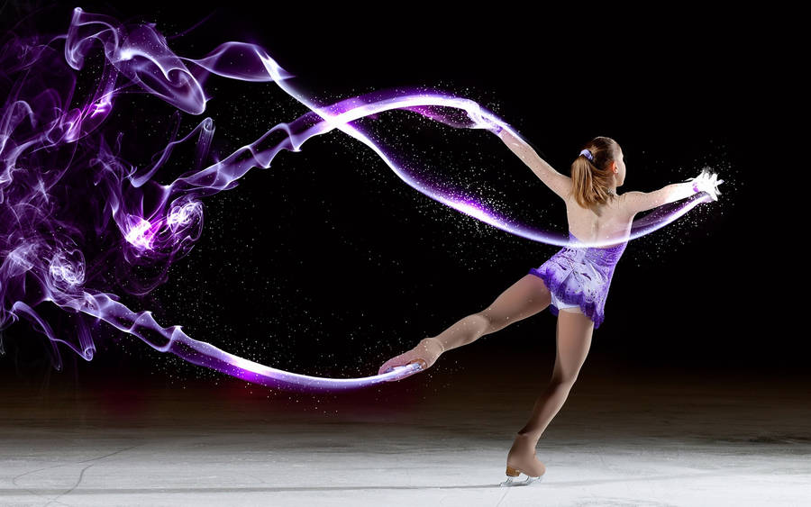

Ice skating is one of my favorite activities because it combines movement, balance, and creativity. Being on the ice feels freeing, and it is a great way to stay active while enjoying the winter season. Skating also requires focus and coordination, which makes it both challenging and rewarding.
I enjoy visiting local ice rinks and practicing different skating techniques. Even simple skating around the rink can be relaxing and fun. Over time, skating has helped me improve my balance and confidence on the ice.
Ice skating is also something that can be enjoyed socially. Skating with friends or attending public skating sessions creates a fun environment where people of different skill levels can enjoy the activity together.
The video below shows an example of ice skating and how graceful the sport can be.